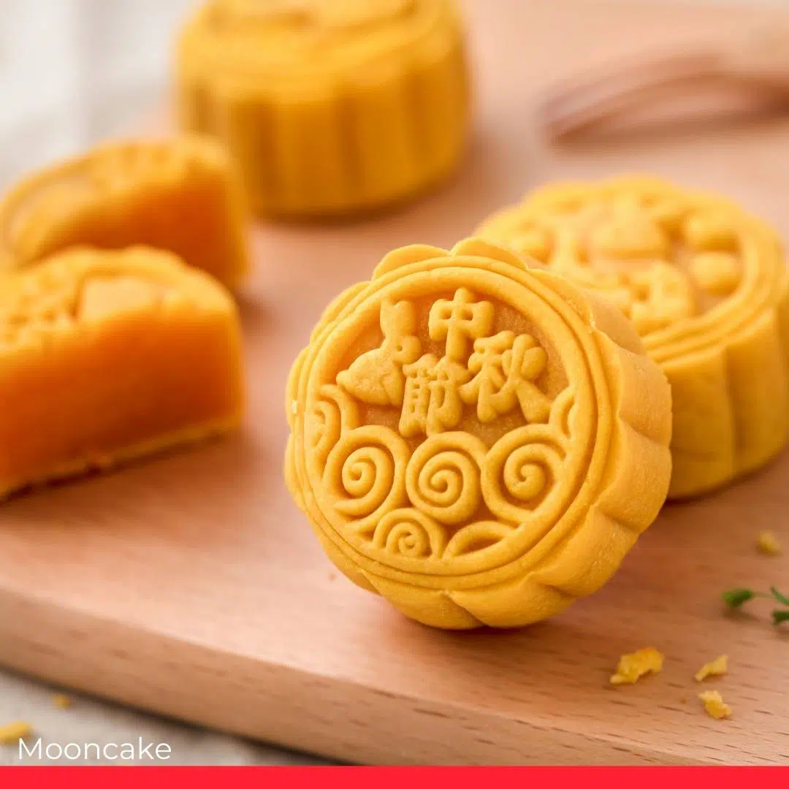
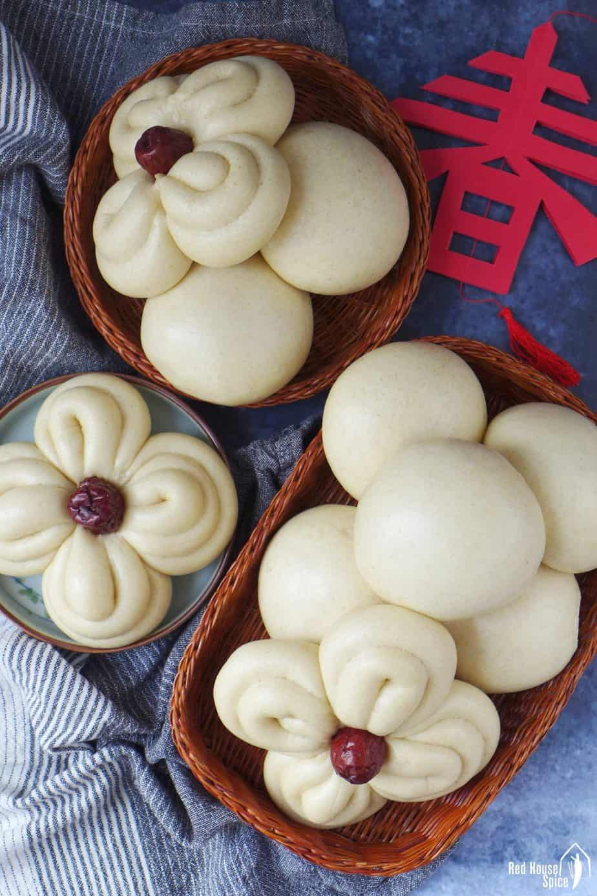

Yuanxiao or Sweet Rice Balls

MoonCake
MoonCake, a tradisional Chinese desset
Make with all the tradisional recipes
and our homemade Golden Syrup. $12.00
Yuanxiao or Sweet Rice Balls
Yuanxiao or Sweet Rice balls are our
sweet homemade sweet red bean past.
We make our dough fresh every morning
as well with our bean past. $12.00

Cucumber Cold Cake
Cucumber Cold Cake, the employes favorite
food here. We make the cake with fresh everything!
Our main ingredient cuucumber, Mug bean starch,
and coconut powder. $12.00

Mantou
Mantou is a tradisional desert that was
orginiated in china. A very yummy bread
we prepare all the ingredient in the morning
without fail. $12.00